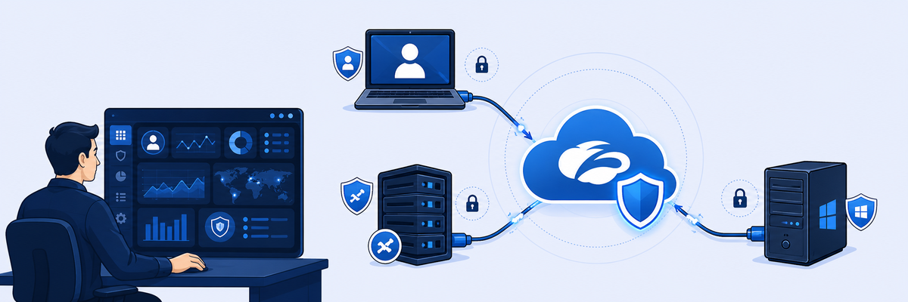

Lab 0: About the EDU-200 Hands-On Lab
Welcome to the Zscaler for Users — Administrator (EDU-200) Hands-on Lab. Throughout the hands-on lab, you will practice skills that you learned during the EDU-200 e-learning. By the end of the hands-on lab, you will be able to:
- Configure connectivity to the Zero Trust Exchange.
- Configure access control policies to allow or deny traffic through the Zero Trust Exchange.
- Use the administration interfaces to interpret and analyze traffic patterns.

Before you touch the console, think about how this small pod stands in for a real enterprise: one user endpoint, one data center, and a cloud service in between.
- The Corp Client PC sits at
192.168.1.1and the data center is10.0.0.0/24, yet there is no VPN between them. How do you expect the client to reach intranet apps on the Windows Server? - Every admin and test account in your pod shares the same session password, and all login IDs end in your Student FQDN. Why would a training environment be designed this way, and why would you never do it in production?
- The lab is written for the Experience Center Nav 1.0 interface. What could go wrong if you stayed on Nav 2.0 and tried to follow the menu paths in this guide?
Lab Description and Scenario
For these lab exercises, consider the scenario where your organization (Labtenant) has deployed the Zscaler Zero Trust Exchange to protect against Internet security threats, control Internet access, and provide secure access to private resources. Your organization is also interested in the end-user experience, which can be reported on with the Zero Trust Exchange.
You will deploy the Zscaler Client Connector (ZCC) application to end-user devices to control Internet access, provide access to private applications, and to probe, benchmark, and measure the digital experiences for each user within the organization. To support the rollout, you are tasked to:
- Connect users to the Zero Trust Exchange by deploying ZCC to Windows client devices.
- Configure SSL inspection.
- Deploy Zscaler Digital Experience (ZDX) reporting and create an initial set of ZDX applications and probes.
- Configure user access to both Internet and private applications.
- Verify Cyberthreat Protection services.
- Verify Data Protection services.
Lab Setup
You will have access to the Zscaler Zero Trust Exchange (Service Portal (formerly ZIdentity) / ZIA / ZPA / ZDX) and a lab ‘Pod’. For your lab exercises, you will configure the Service Portal, ZIA, ZPA, and ZDX services and explore the end-user experience. You will use a Windows 10 Client PC to connect to the Zero Trust Exchange.
Lab Topology
Virtual Machines
- Windows Client PC: Corp Client PC. Joined to the Active Directory domain
patraining.safemarch.com.- Username | Password:
student|Admin-123!
- Username | Password:
- Windows Server: Corp Win Svr 2025
- Provides local directory services through Active Directory.
- Hosts the Active Directory domain
patraining.safemarch.com, which the Corp Client PC is joined to. - Runs HTTP/HTTPS intranet applications and file services.
- Acts as the DNS server for hosts in the data center.
- Username | Password:
administrator|Admin-123!
- App Connector: Corp App Connector. A Red Hat Enterprise 9.4 VM, pre-deployed in the network to simulate having already deployed the VM from the OVA/OVF file with the App Connector RPM installed.
- Username | Password:
admin|Zscaler1!
- Username | Password:
Lab Credentials
| Virtual Machine Name | User Name | Password | IP Address |
|---|---|---|---|
| Corp Client PC | student | Admin-123! | 192.168.1.1 |
| Corp Win Svr 2025 | administrator | Admin-123! | 10.0.0.0/24 |
| Corp App Connector | admin | Zscaler1! | 10.0.0.4 |
| User Information | User Name | Password | |
| Joe | Admin-123! | ||
| Bev | Admin-123! |
Lab Access Information
For this course, each student gets a unique student ID with a dedicated virtual environment, plus a matching Student FQDN and a set of admin and test user accounts for Zscaler. All user credentials and portal addresses are in the lab access instructions for your assigned training pod. These include:
- Your Student ID, a unique identifier for your pod (e.g.,
zs9901). - Your Student FQDN, a unique domain for your pod (e.g.,
zs9901.labtenant.com). - Your admin login credentials for the Zscaler portals:
- The login name uses the format
student@<Student FQDN>, where <Student FQDN> is the domain assigned to your pod. - The password is unique to your session and is the same on every configured admin and user account in the pod.
- The login name uses the format
Note: To navigate to any specific feature, you can use the search option available in the Experience Center tenant.
Navigating to the Experience Center Nav 1.0 User Interface
After you log in to your assigned Zscaler lab tenant or Solutions Demo Center tenant, you should see the Experience Center Nav 1.0 user interface. If you see Experience Center Nav 2.0 instead, switch to Nav 1.0, because this lab is designed around it:
NAV Switch from Nav 2.0 to Nav 1.0
- In the Experience Center Nav 2.0 tenant, click the account settings icon in the top-right corner and go to Account Settings.
- Under Settings > New Navigation Experience, select Original, then click Save at the bottom to switch to the Experience Center Nav 1.0 user interface.
@<Student FQDN>. App Connector password is now Zscaler1!. Use Nav 1.0 (Original) so the menus match this guide.